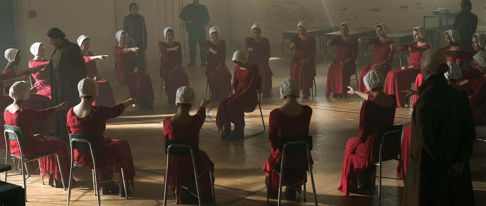
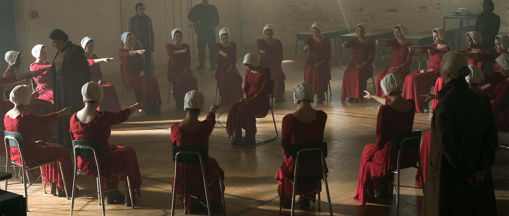

O Conto da Aia
O que se trata O Conto da Aia?
Em meio a guerras e uma crise de infertilidade, um grupo fundamentalista toma o poder e divide as mulheres em castas. Este é o cenário do livro O Conto da Aia, da escritora canadense Margaret Atwood, que foi adaptado para uma série aclamada pela crítica em 2017.
Qual a história do Conto da Aia
A história e o enredo de The Handmaid's Tale - "O Conto da Aia" Em um período do futuro os Estados Unidos sofre um golpe de estado após alguns desastres e a queda na taxa de natalidade. Comandado agora por religiosos em um regime totalitário, o país passou a se chamar Gilead.
O que são as Aias
As mulheres em idade fértil que pariram em algum momento de suas vidas se tornam Aias, mulheres treinadas para engravidar, parir e amamentar um filho destinado ao Comandante e sua Esposa.
 
